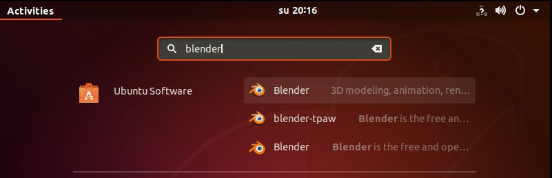
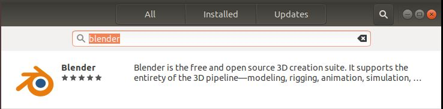
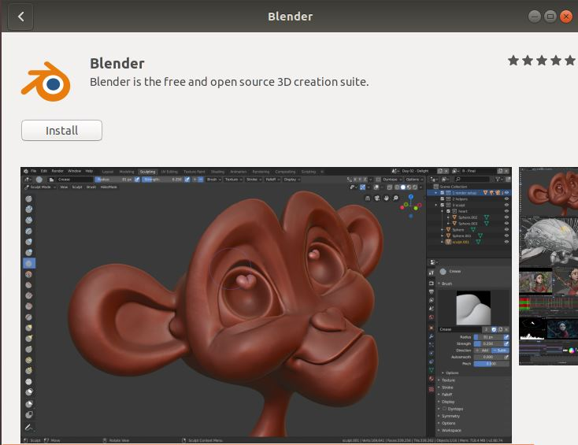
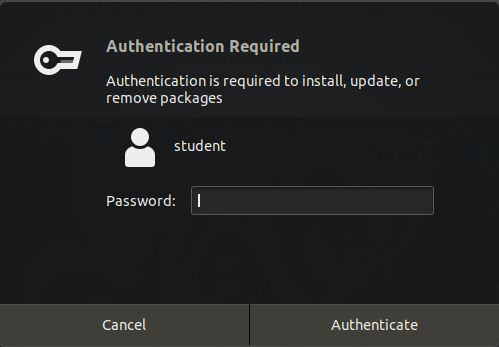
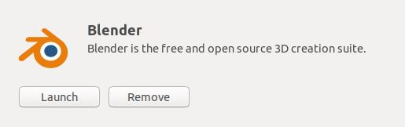
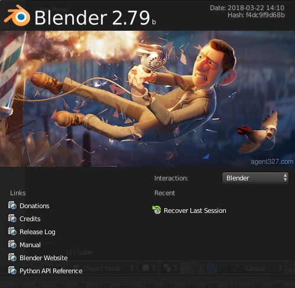
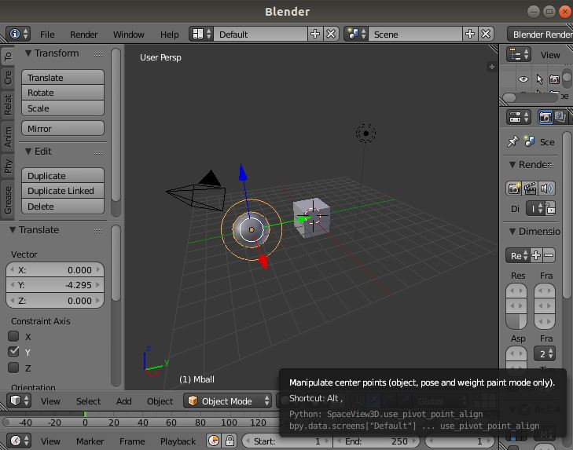

1. Aloita klikkaamalla ruudun vasemmasta alanurkasta "Show applications", ja kirjoita hakuun "Blender".
Listasta tulisi löytyä Blender. Valitse ohjelma listasta.

2. Tämän jälkeen aukeaa lista josta valitaan Blender.

3. Klikkaa "Install", ja asennuksen tulisi kestää korkeintaan muutaman minuuutin.

4. Tämän jälkeen sinulta kysytään käyttäjäsi salasanaa, jotta asennus voidaan vahvistaa.

5. Kun ohjelma on asennettu, voit käynnistää sen klikkaamalla "Launch".

6. Ohjelman aukemiseen menee muutama minuutti.

7. Ohjelma on aukeaa on valmis käytettäväksi.
